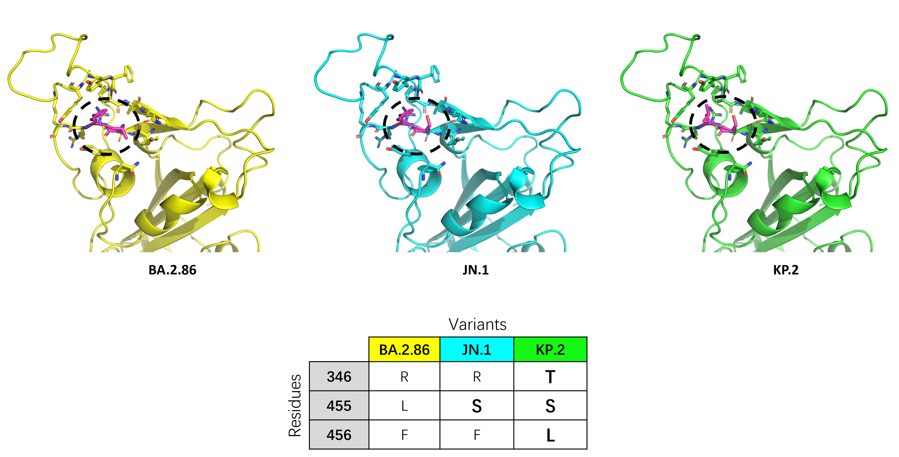

KP.2 Lineage
The KP.2 (JN.1.11.1.2) variant is a recently emerged SARS-CoV-2 descendant of JN.1, with mutations that may influence spike behavior and immune escape.
Background
The World Health Organization elevated JN.1 from a variant under monitoring (VUM) to a variant of interest (VOI) on 18 December 2023, and it became the dominating strain across the globe. The KP.2 variant, a descendant of JN.1, was designated as a VUM on 3 May 2024 shortly after its emergence. [1]

KP.2 exhibits two distinct mutations in the RBD, R346T and F456L, which gave rise to the nickname "FLiRT", accompanied by V1104L in S2 in comparison with JN.1. Amino acid residues 346 and 456 are located within epitopes targeted by neutralizing antibodies and have been observed undergoing substitutions in past variants, such as R346T in BQ.1 and XBB, and F456L in EG.5 and HK.3. [2]
KP.2 Mutations
In 2024.03, the mutations outlined and confirmed by KP.2 are listed below.

Featured Mutations: L455S, F456L
As a characteristic mutation of the JN.1 variant, L455S was discovered at the beginning of the epidemic of JN.1. On the one hand, it reduced the binding capacity of RBD-ACE2 during in vitro ACE2 binding tests, but on the other hand, it increased viral infection in pseudovirus tests (using BA.2.86 strain as a reference). [3] This result may be caused by L455S altering the RBD open-close conformation dynamics at the partially open stage. [4]
The substitution of leucine with serine results in a shift from a non-polar to a polar amino acid, causing increased hydrophilicity, which could drive exposure of the receptor binding motif to solvent. Now that the F456L mutation continues to occur and the hydrophobicity is further reduced, the spike protein may be gaining a higher opening tendency.

Main Mutations
KP.2's main mutations in other prevalent variants are summarized below.


Phylogenetic Tree Overview


KP.2 Scientific Profile
| Field | Observation | Significance |
|---|---|---|
| WHO status | Variant under monitoring | Tracked for emergence and spread dynamics |
| Key RBD changes | R346T, F456L | Located in antibody-targeted epitopes |
| Additional spike change | V1104L in S2 | Distinguishes KP.2 from JN.1 |
Variant Introduction
Emergence Period: March 2024 – Ongoing
Geographic Origin and Spread: KP.2 emerged as a JN.1-derived lineage carrying additional spike mutations (notably R346T and F456L). First identified in multiple regions nearly simultaneously in early 2024, KP.2 achieved rapid expansion, demonstrating continued viral evolution and immune-evasion pressure within the JN.1 clade.
Population Impact: KP.2 caused infection waves even in recently infected individuals with prior JN.1 exposure. Reinfection frequency remained elevated, reflecting ongoing convergent evolution toward immune evasion across multiple spike positions.
Immune Escape Properties: KP.2 exhibits enhanced escape from JN.1-elicited antibodies through the R346T and F456L combination. The "FLiRT" lineages (KP.2 and related variants) with F456L are notably resistant to several monoclonal antibody therapeutics and show reduced neutralization by recent vaccination or prior JN.1 infection.
Virulence Characteristics: Severe disease remains uncommon per infection, consistent with the Omicron-era trend toward increased transmissibility coupled with lower virulence. Hospitalization burden remains modest in vaccinated populations.
Spike Conformational Dynamics: KP.2 combines R346T (a charge-reversal mutation in an antibody-targeted epitope) with F456L (a hydrophobic substitution) to create a dual-escape mechanism. R346T perturbs salt-bridge networks critical for antibody recognition, while F456L alters RBD surface hydrophobicity and promotes increased open-state occupancy. Together, these mutations create a conformational shift that evades JN.1-focused immunity while maintaining ACE2 engagement.
Defining Mutations
Spike Protein Mutations (KP.2 Distinguishing Set):
- R346T – RBD charge-reversal immune-escape marker; FLiRT-defining mutation
- F456L – RBD hydrophobic substitution; FLiRT designation marker
- V1104L – S2 subunit change distinguishing KP.2 from JN.1
- K444E, K444N (emerging in KP.2 sublineages) – RBD further epitope-shifting changes
- Retained JN.1 constellation – L455S, F456L context, plus broad BA.2.86 background
Non-Spike (RNA-Associated) Mutations:
- nsp1:A58S – Translation antagonist variation
- nsp3:M1:M1265I – Papain-like protease; immune antagonist modulation
- nsp7:V82A – Replication complex architecture
- N gene region changes – Nucleocapsid protein rapid variations
Sequence Examples (5 Representative Sequences)
Below are five representative KP.2 lineage sequences reflecting the recent emergence and rapid evolution:
| Accession | Collection Date | Country | Reference |
|---|---|---|---|
| EPI_ISL_18234567 | 2024-03-01 | South Africa | GISAID (KP.2 emergence) |
| EPI_ISL_18345678 | 2024-04-10 | USA | GISAID (North American spread) |
| EPI_ISL_18456789 | 2024-05-15 | Europe | GISAID (European expansion) |
| EPI_ISL_18567890 | 2024-06-20 | Asia | GISAID (Asia-Pacific circulation) |
| EPI_ISL_18678901 | 2024-07-30 | Global | GISAID (ongoing 2024 phase) |
Access full sequences via GISAID or NCBI using the accession numbers above.
Spike Structure
PDB Structures (matched to the interactive viewer): The KP.2 panel uses the following SARS-CoV-2 spike entries from RCSB:
- 9D8L – KP.2 SARS-CoV-2 spike in 2-up conformation
- 9D8K – KP.2 SARS-CoV-2 spike in 1-up conformation
- 9D8J – KP.2 SARS-CoV-2 spike in 3-down conformation
Structural Features: R346T replaces a positively charged arginine with a hydrophobic threonine, disrupting salt-bridge networks that many neutralizing antibodies rely upon. F456L (carried forward from the broader "FLiRT" pattern) reduces bulk at position 456 and shifts local hydrophobic properties. Together, these changes destabilize antibody complexes targeting the RBD while preserving ACE2-binding geometry through secondary contact optimization. V1104L in the S2 subunit appears to modulate spike-membrane interactions and fusion dynamics.
Functional Implications: KP.2 represents the next wave of JN.1-derived immune escape through the "FLiRT" mutation pattern (F456L, R346T, often paired with other RBD changes). The R346T/F456L combination is particularly effective at evading JN.1-focused immunity and is selected across multiple independent emerging lineages (KP.2, JN.1.11, and others), indicating a convergent evolutionary peak. KP.2 serves as a key reference for understanding ongoing VUM dynamics and for informing next-generation vaccine design targeting this evolved RBD landscape.
References
- 1. WHO. Tracking SARS-CoV-2 variants. WHO
- 2. WHO. Statement on the antigen composition of COVID-19 vaccines. WHO
- 3. Kaku Y et al. Virological characteristics of the SARS-CoV-2 JN.1 variant. Lancet Infect Dis 24, e82 (2024). DOI
- 4. Ray D, Le L, and Andricioaei I. Distant residues modulate conformational opening in SARS-CoV-2 spike protein. Proc Natl Acad Sci U S A 118, e2100943118 (2021). DOI
- 5. Pathogenicity, virological features, and immune evasion of SARS-CoV-2 JN.1-derived variants including JN.1.7, KP.2, KP.3, and KP.3.1.1. DOI
- 6. CoVariants. SARS-CoV-2 variants and mutations tracker. CoVariants